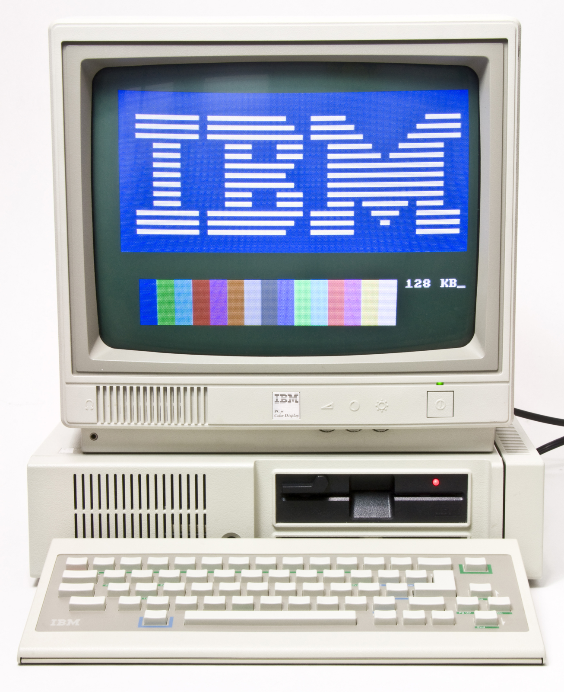

oryginalna wersja i przodek platformy komputerów osobistych, zapoczątkowanej 12 sierpnia 1981 roku przez przedsiębiorstwo IBM modelem IBM 5150, znanym jako IBM PC.
Został opracowany przez zespół inżynierów i wykonawców pod kierownictwem Dona Estridge’a z IBM Entry Systems Division w Boca Raton, na Florydzie.
Ogólne określenie „komputer osobisty” było w użyciu jeszcze przed 1981, stosowano je już w 1972 roku dla Xerox PARC Alto, ale ze względu na sukces modelu IBM Personal Computer, określenie „PC” zaczęło oznaczać dokładniej mikrokomputer biurkowy zgodny z produktami IBM PC.
Podstawowy kod rozruchowy IBM PC w ROM to BIOS (Basic Input/Output System). Zawiera on bibliotekę podstawowych funkcji i zadań, takich jak wyjście wideo, wejście klawiatury, dostęp do dysku, obsługa przerwań, testowanie pamięci i testowanie innych komponentów systemu.
BIOS także ładuje system operacyjny. BIOS oryginalnego IBM PC mógł być rozszerzony o ROM BASIC (nie mylić z basic ROM), czyli język programowania BASIC w stałej pamięci komputera (ROM).
Do tego celu na płycie głównej komputera PC przeznaczono 4 podstawki pod pamięci ROM (4x8kB), albo jedną podstawkę pod ROM 1x32kB (czasami zdarzało się 5 podstawek - albo jedno - 4x8, albo drugie - 1x32).